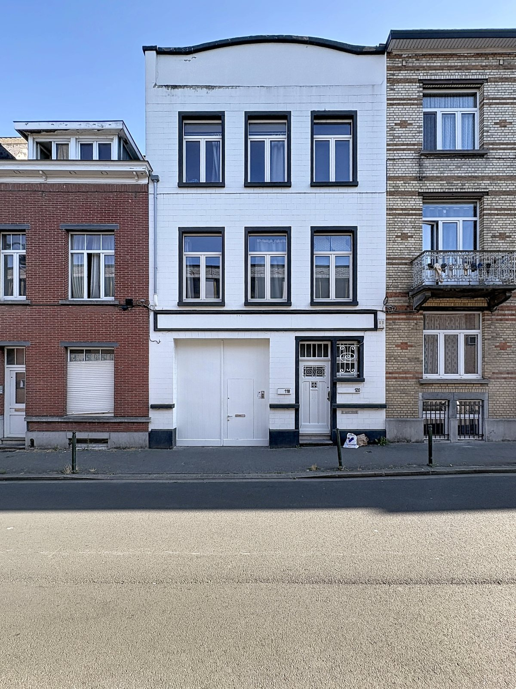
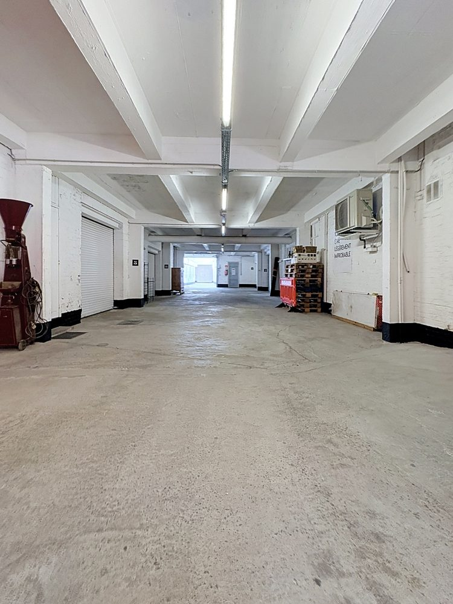
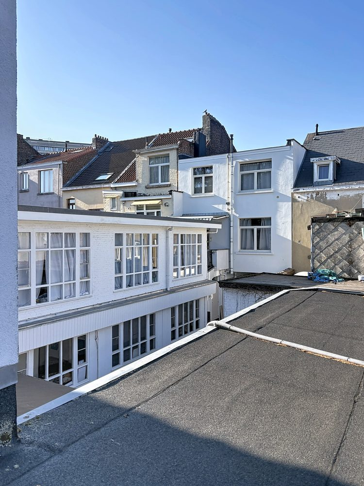
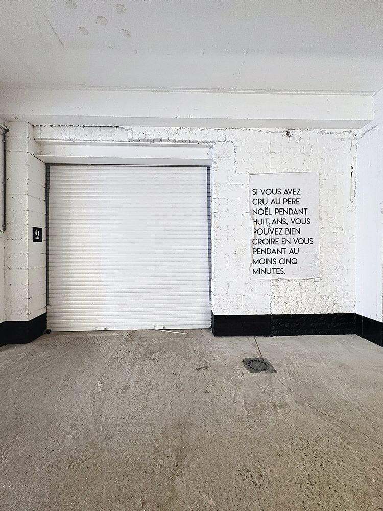
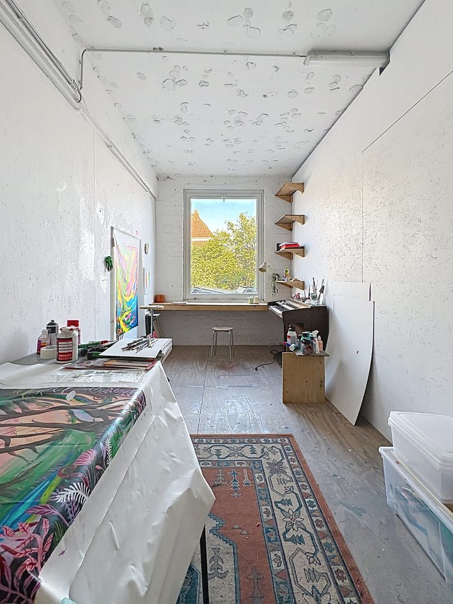

Bruxelles
Ateliers 118
- Molenbeek-Saint-JeanLocalisation
- 1 200 m²Surface
- AteliersUsage
01
Ce que c’était
Une usine de colle construite dans les années 1950, devenue entrepôt à vin pendant trois décennies. Un bâtiment qui avait déjà survécu à deux vies.
02
Ce que nous y avons vu
De la lumière, des volumes, et des infrastructures trop coûteuses pour un seul occupant — donc à partager. Tout était déjà là ; il suffisait de le mettre dans le bon ordre.
03
Ce que c’est devenu
Acheté en 2016, rénové de fond en comble : isolation des façades, 300 m² de production solaire. Aujourd’hui treize ateliers de 30 à 300 m² où des artisans, des artistes, des indépendants et de petites entreprises développent leur activité — et parfois leur rêve.

Photos



